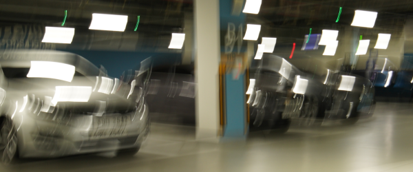
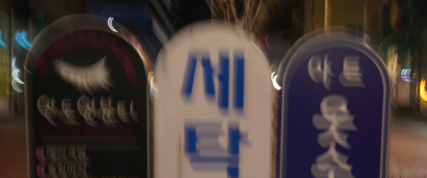

Jaesung Rim, Haeyun Lee, Jucheol Won, Sunghyun Cho
In this work, we present a large-scale dataset of real-world blurred images and ground truth sharp images for learning and benchmarking single image deblurring methods. To collect our dataset, we build an image acquisition system to simultaneously capture geometrically aligned pairs of blurred and sharp images, and develop a postprocessing method to produce high-quality ground truth images. We analyze the effect of our postprocessing method and the performance of existing deblurring methods. Our analysis shows that our dataset significantly improves deblurring quality for real-world blurred images.
| RealBlur-J | RealBlur-R | ||
|---|---|---|---|
| Methods | PSNR/SSIM | Methods | PSNR/SSIM |
| SRN-DeblurNet* | 31.38/0.9091 | SRN-DeblurNet* | 38.65/0.9652 |
| DeblurGAN-v2* | 29.69/0.8703 | DeblurGAN-v2* | 36.44/0.9347 |
| DeblurGAN-v2 | 28.70/0.8662 | J.Zhang et al. | 35.70/0.9481 |
| SRN-DeblurNet | 28.56/0.8674 | SRN-DeblurNet | 35.66/0.9472 |
| J.Zhang et al. | 28.42/0.8596 | H.Zhang et al. | 35.48/0.9466 |
| DeblurGAN | 27.97/0.8343 | DeblurGAN-v2 | 35.26/0.9440 |
| Nah et al. | 27.87/0.8274 | Xu et al. | 34.46/0.9368 |
| H.Zhang et al. | 27.80/0.8472 | Pan et al. | 34.01/0.9162 |
| Pan et al. | 27.22/0.7901 | DeblurGAN | 33.79/0.9034 |
| Xu et al. | 27.14/0.8303 | Hu et al. | 33.67/0.9158 |
| Hu et al. | 26.41/0.8028 | Nah et al. | 32.51/0.8406 |
Please feel free to contact us with any feedback, questions, or comments